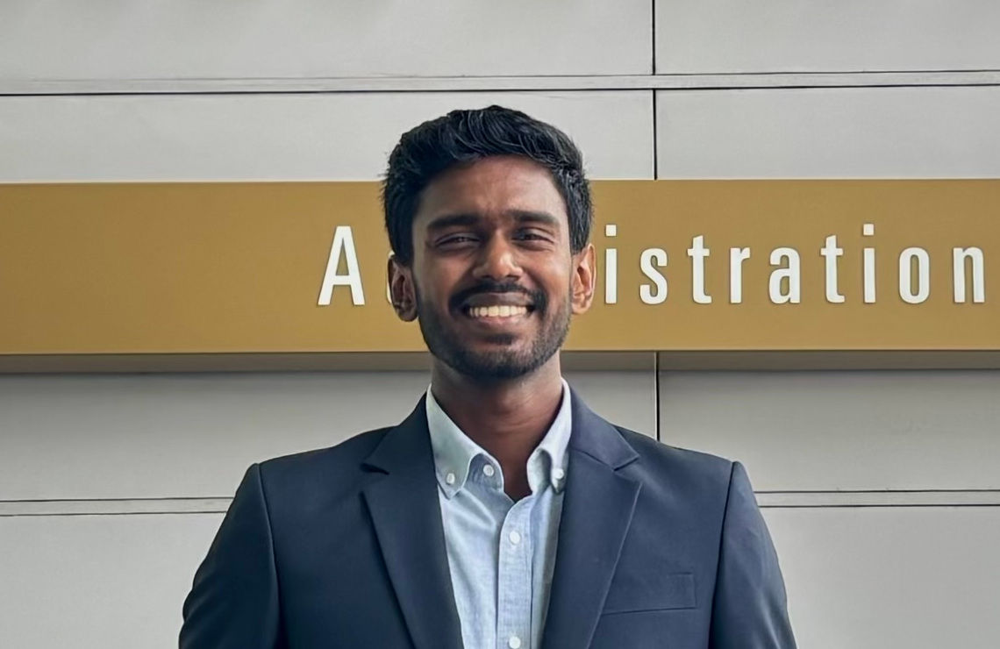

About

I am a final-year Electronic and Telecommunication Engineering undergraduate at the University of Moratuwa, Sri Lanka.
My research interests are deep learning, reinforcement learning, robotics, and computer vision.

I am a final-year Electronic and Telecommunication Engineering undergraduate at the University of Moratuwa, Sri Lanka.
My research interests are deep learning, reinforcement learning, robotics, and computer vision.